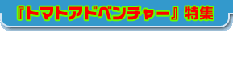
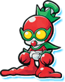
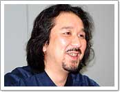
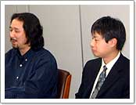
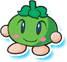
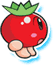
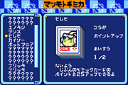
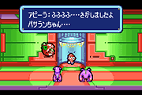

|  |
| ▼トマトやおもちゃ（ギミック）など、子どもが喜びそうな要素がたくさん入っていますよね。 藤岡 あまり深刻な世界観を作りたくなかったんですね。わかりやすいもの、そして独特なものを作りたかったんです。でも、見かけはとてもかわいらしいんですが、けっこうアクが強い部分があるんですよ。 |
| ▼そういえば、キューピー人形のキャラクターがハサミを持っていたりしますよね。 藤岡 作っているスタッフの個性が出ているんですね。ちょっと毒のある部分というか。ですから、子どもさんだけではなく、大人のかたにもなじめるのではないかと思います。 |
| ▼任天堂側ではどんな作業があったんですか。 伊豆野 パッケージ、マニュアルを含めての印刷物の制作ですね。また、ゲームの中身に関しては、任天堂社内で意見や要望をまとめて、アルファドリームさんとやりとりを続けながら「ああしましょう」「こうしましょう」と仕様を固めていきました。 藤岡 ひととおり完成していたゲームを第三者的にきちんと評価してもらい、改良を加えていったという形ですね。 |
| ▼任天堂からの要望で大きかったのはどれですか。 伊豆野 タイトルを『ギミックランド』ではなく、インパクトのある『トマトアドベンチャー』にするということ。また、それを代表するようなわかりやすいキャラクターを入れてほしいということ。それが、任天堂の一番大きな要望でした。そこで、生まれたのが「トマトリオ」というキャラクターなんです。 藤岡 確かにひとつひとつのキャラはおもしろいんですが、ディティールも細かいですし、子どもには少し難しいんですね。そこにシンボリックなトマトキャラクターを入れることで、イメージが伝わりやすくなった。かなり完成に近い時期に提案があったのですが、できる限り入れこみました。 |
| ▼それ以外にはありますか。 伊豆野 ゲーム中に「ギミカ」というカードゲームが入っているんですが、ゲームボーイカラーのときはフィールドに落ちているカードを拾う設定になっていたんです。それを、フィールドにいる主要なキャラと戦って手に入れていく設定に変えてもらいました。 藤岡 作業的にはそれが一番大きな変更でしたね。もともとゲームボーイカラーに入っている通信の機能を使いたくて、試しにカードゲームを入れてみたんですね。そうしたら、自分たちでもすごくおもしろかったんです。さらに、任天堂さんに、その要素がとてもウケたんですね。それで、いままで村の中でしゃべっていたキャラクターのセリフをへらして、カードゲームの部分を増やしたんですよ。その結果、デッキの要素も増えましたし、いつまでも遊べるゲームになってよかったと思いますね。 |
| ▼プレイ時間は何時間くらいでしょう。 藤岡 普通にプレイして16〜17時間、カードや「おしゃぶり」を探していくと25〜26時間くらいでしょうか。 |
| ▼制作者として、ぜひ見てほしいところはありますか。 藤岡 実はシナリオなんですよ。とらわれた女の子を助けに行くという王道のストーリーですが、１つ１つのシーンの中で、言葉は非常に大事にされています。そのへんをきちんと拾ってもらえると、大人としてもニヤリと笑えるんじゃないかと思います。基本的には、ギミックを強くしてコマンドさえ成功すれば勝てるというわかりやすい構造なので、だれにでも楽しんでもらえると思いますよ。パーティーのメンバーが一撃ではやられないようにとか、そのへんのバランスにも気を使いました。ほかのＲＰＧのように経験値をためなくても、ギミックのテクニックが上がれば勝てるというのも大きいですよね。 伊豆野 とにかくさわってもらえればおもしろさがわかると思いますので、まずはプレイしてみてください。かわいいからといって、子ども向けだと思ってほしくないんですね。中高生や大人のかたにも楽しんでいただける作品ですよ。 |
|
||||||||||||||||||||||||||
|